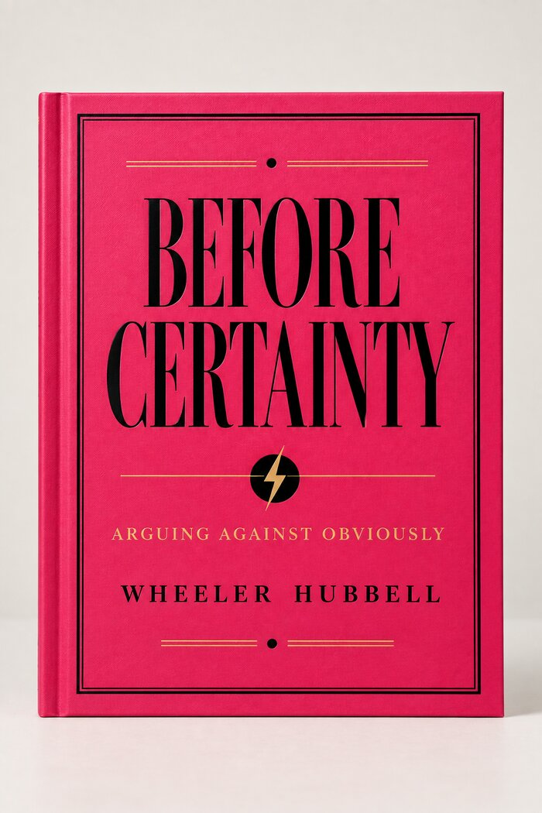
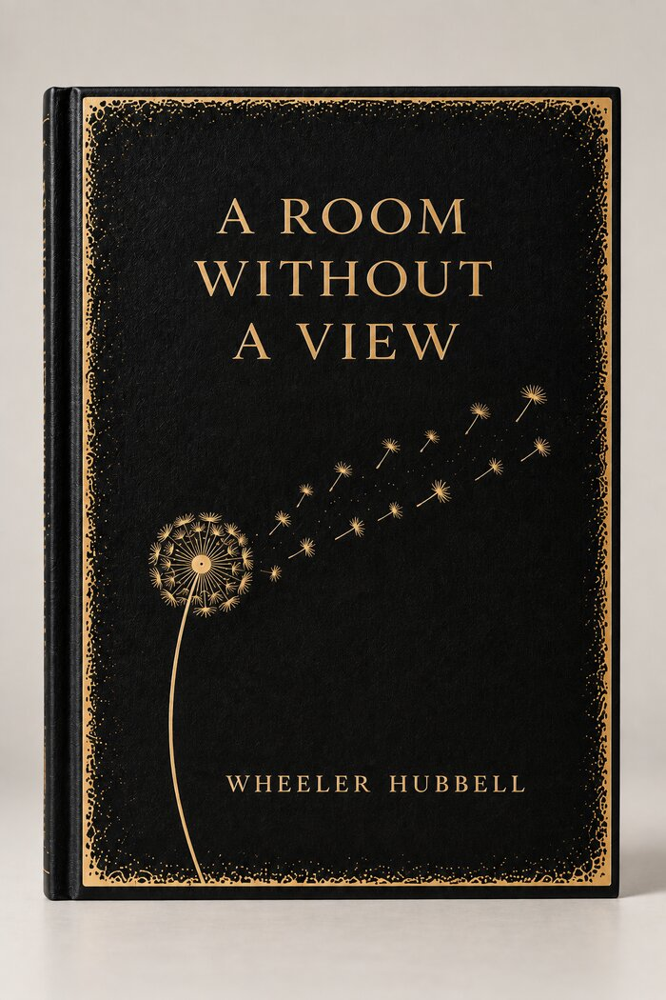
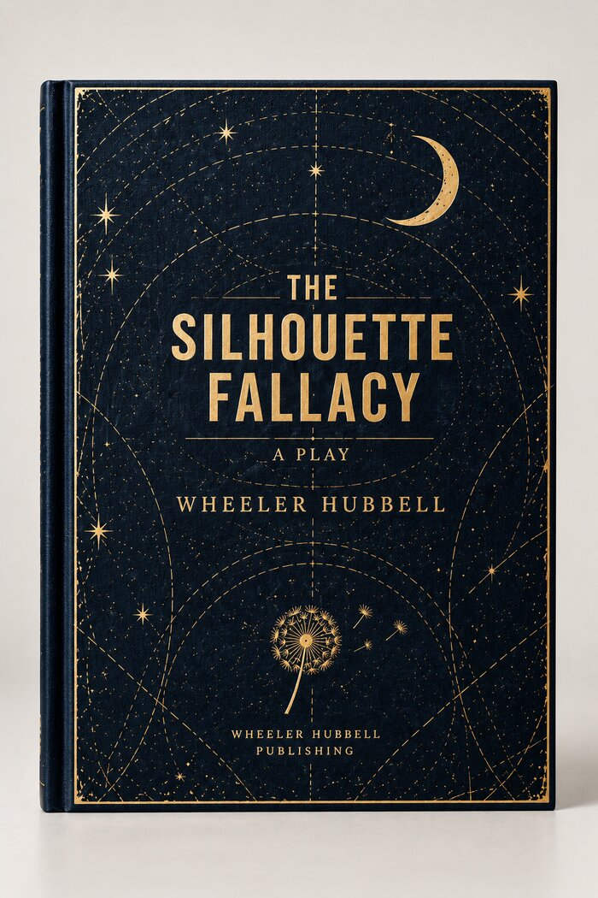
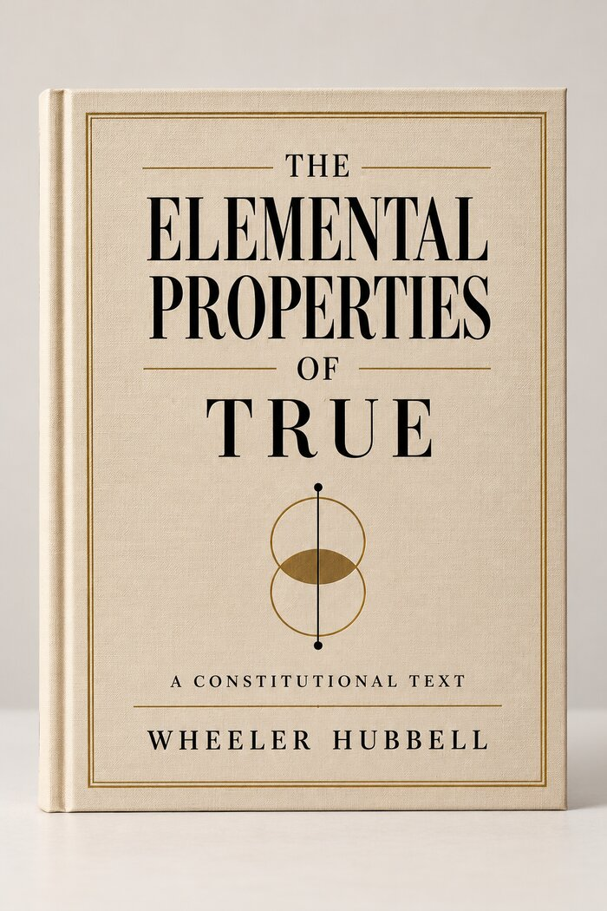

Book / 01
Before Certainty

What comes before a conclusion? Evidence is incomplete. Language is imperfect. A person still has to decide what to do.
Wheeler Hubbell Publishing · New York
Books, plays, essays, research, and Decision Integrity.
Writing, publishing, and inquiry
The Work
Books
Plays
Essays
Books, essays, plays, research, and Decision Integrity.
The work moves between literary writing, theater, research, publishing, and the practical questions that arise when truth, perception, memory, responsibility, and judgment matter.
Different questions require different forms. The work is not one thesis told six ways.
The Work / Books
Books by Wheeler Hubbell, in literary, philosophical, dramatic, and other forms.
Featured works
Book / 01

What comes before a conclusion? Evidence is incomplete. Language is imperfect. A person still has to decide what to do.
Book / 02

Interior life, limited sightlines, imagination, and the world a person builds from what can be seen.
Play / 03

What happens when outline is mistaken for substance, impression for understanding, and a familiar story for a true one?
Book / 04

Truth as something more demanding than assertion: attention, evidence, coherence, revision, and a willingness to be corrected.
Further works
The Work / Essays
Essays on writing, art, memory, language, publishing, truth, judgment, and the stories people and institutions use to explain themselves.
Some are arguments. Some are observations. Some begin with a question and follow it until it becomes something else.
The Work / Plays
Plays by Wheeler Hubbell.
People speak. People remember differently. Something has happened, or may have happened, and everyone has a version of it.
The Method
A structured method for examining consequential decisions.
Important decisions are often made without complete information. The protocol provides a disciplined way to examine what is known, what is assumed, what is missing, who has authority, who bears the consequences, and what would require the decision to be reconsidered.
Taught as five capabilities
Answer the question that was actually asked.
Tell observation, report, inference and finding apart.
Keep the conditions that make a claim true.
Separate access from the authority to act.
Fix the first break, then trace what depends on it.
Open the protocol / The questions and the method →
Teaching library
Five booksFive workbooksIntegrated practicumAssessmentThe Research
Research by Wheeler Hubbell.
Research / 01
Constitutional Continuity Theory is a public preprint (Version 1.0, 2026) published by Wheeler Hubbell Publishing. It is accompanied by an Adversarial Memorandum, Twelve Objections, Their Replies, and the Conditions of Amendment.
Open the preprint →Open the Adversarial Memorandum →Wheeler Hubbell on ORCID
Research / 02
Proposition Integrity Beyond Answering the Wrong Question
A system can replace the proposition it was asked to evaluate, reason coherently about the replacement, and present the result as though it answered the original. The paper defines that failure, separates it from faithful compression, and sets out an auditable Proposition Integrity Test.
The Keeping Room
A monthly essay from Wheeler Hubbell Publishing.
The Keeping Room is the monthly editorial publication of Wheeler Hubbell Publishing.
Each month, Wheeler Hubbell publishes writing on books, plays, art, memory, truth, language, publishing, decision-making, or another question arising from the work.
Some pieces develop ideas from the books or the Decision Integrity Protocol. Others stand on their own. The point is to publish work when there is something worth saying.
One essay each month.
“Empty is a claim. Unentered is the truth.”
The House
New York
Wheeler Hubbell Publishing is the independent publishing home of the work.
It publishes the books, essays, plays, research, and teaching materials, and handles the work of bringing them into durable editions: design, typesetting, production, and related editorial work.
Its teaching library pairs five books with five workbooks, followed by an integrated practicum and assessment.
About
Wheeler Hubbell is a writer, author, playwright, publisher, researcher, and maker working across literary, dramatic, practical, and visual forms.
The work does not stay in one register. A book can ask a literary question. A play can put a question in the mouths of people who disagree about what happened. An essay can follow an observation. Research can require a formal argument. Decision Integrity requires a method.
What connects the work is not a single subject. It is the attention given to the thing itself: what is there, what is missing, what can be said, what cannot yet be known, and what follows from getting the distinction wrong.
Wheeler Hubbell Publishing is the independent publishing home of this work.
Contact
Speaking, consulting and publishing inquiries.